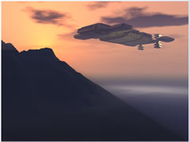

Starkick Traders Strategy Guide |
Introduction: |
|
Welcome to the Starkick Traders Strategy Guide! This is a game of intergalactic exploration. Players explore the universe, trading for commodities and increasing their wealth and power. Battles can be fought over space sectors and planets. In this document you will find some some strategies to get you started. |
Table of Contents: |
Strategies: |
|
These are some generic strategies to help you get started. These aren't set in stone, and are very general. They should give you an idea of what works and what doesn't work. Of course there are many more strategies, but these are the ones I thought up at 2 in the morning. :) Special Note: For all
of these strategies I am assuming that you have already survived your
first couple of days in the game. If you are still a newbie, read the
New Player Guide first. If you have not subscribed
yet, do so. You will never win the game unless you can upgrade your ship
enough and besides, you get free cloning which is dead useful (sorry for
the pun). |
The Trader |
|
The Trader primarily spends his time trading. The best thing to do is find a goods port and an ore port in adjacent sectors. Trade back and forth until either you can afford a hull upgrade or the port's prices are no longer very good. Keep doing this. When your engines are large enough to efficiently use realspace (usually anywhere from 14 to 18) start doing trade routes between goods and ore ports. They don't have to be adjacent at this point. Be sure to buy a fuel scoop if you're going to realspace trade (trade route) as you'll be able to sell any energy you scoop on the way for extra profit. Be sure to have the maximum amount of EWDs and an escape pod at all times to ensure survival. You don't have to upgrade any techs except for hull, energy, and engines. Everything else is good for combat or colonizing. Your military techs can be zero as the EWDs are your primary means of survival. PROS: Quick rise
in score. Good to play catch up if you enter the game late. |
The Planet Trader |
|
The Planet Trader is a more advanced version of the Trader. First find a sector with either an organics port or an Energy port in it and make some planets there. Destroy all the warp links to and from the sector and hope no one finds you. Fill planets with colonists and tell them to make goods. Set up a two-way trade route from your planet to the port and syphon off the goods every so often. An intra sector traderoute only takes 2 turns so this is a great way to make money! PROS: Great way
to make cash quickly. Good to play catch up if you enter the game late.
|
The Furangee Salesman |
|
This is quite a difficult and unproven strategy so far but could be very lucrative. First find a sector lots of warp links and make some planets there. Fill up the planets with as many fighters and torpedoes as you can. Anything over 10m fighters should be enough but you want them heavily protected to stop take overs. If you make enough planets and bases to own the sector make sure that ship to ship attacking is still allowed otherwise Furagnee will not frequent your sector (Furangee always need to option to attack). Once all your planets are in place fill them with colonists and tell them to make a variety of commodities. Furangee link different things. Then destroy all the warp links going out of the sector but keep one link or make a link that goes to a port in another sector. Fly to that sector and destroy all the warp links going out of that one too except for the link going back to your planet sector. What you want is lots of ways for Furangee to get to your planets but not many ways to get out. :-) Then set all your planets to sell commodities and rack the price way up to max. You might want to avoid selling energy because that is vital to your planet's survival. Then all you have to do is wait and Furangee will eventually pop into your binary system and start trading, and trading and trading.. You might want to switch off the alerts because they will bop back and forth trading like mad. Eventually they pop out of your system or you might want to kill them. PROS: Makes cash
by itself once it's set up.. |
The Builder |
|
The Builder is mainly concerned in building a planetary empire. As such, he should aim for a hull level of about 15 or 16 and then start colonizing a planet. Colonize planets to about 25-50 million people before moving on to the next planet. Here's the deal on upgrading: When you hit a 15-16 hull level, upgrade everything to within 4 of your hull. Actually, forget about sensors. Builders don't need sensors. They don't need armor either for that matter. Always have full EWDs and an escape pod. Every time you upgrade your hull, upgrade the other techs. Stop upgrading engines when you can efficiently use realspace to get anywhere in 1 turn. Upgrade as soon as you can. As far as colonizing is concerned, realspace to a special port. Pick up a full load of colonists, fighters, and torpedoes. Make sure that your hull is empty before you go there so you can fill up to the max. Realspace to your new planet. Drop off colonists, fighters, torpedoes, and the energy you made from realspacing. On each new planet, set the energy production to 5% and all other productions to zero. You'll need the energy to power your planetary shields and beams (laser weapons) and any sector defenses you deploy in the future. Colonize constantly. Use the money made by your planets to buy the stuff to supply your planets. You don't really need to trade much in this strategy. PROS: You make
lots of cash in the long run. |
The Banker |
|
The Banker builds one planet to full capacity. Upgrade as though you were a builder. Be sure that the planet is extremely well defended. Keep adding fighters. If you think that the planet has a ridiculously high number of fighters, then it's probably the right number. I'd recommend spending something like 5-10% of your turns adding more fighters and torps to the planet. Okay, here's the way the Banker makes his or her living: Put all your money on the planet and then land on the planet. It should be well defended enough to survive any attacks. Wait 600 turns, during which the money will earn interest. Play the 600 turns as though you were a Trader to make cash. At the end, put the new money on the planet and wait another 600 turns before you play again. The important thing is to let the money sit around and accrue interest for as long as possible. This strategy works fairly well if you combine it with a Builder, i.e.. Build a bunch of planets, but Bank on one of them. Harder to defend your empire this way. PROS: You can
make a metric buttload of cash if you're patient. |
The Conqueror |
|
The premise here is that you build up your military techs (shields, armor, computers, torps, and to a lesser degree sensors) and use them to take other people's planets. You then use the money acquired from these new planets to upgrade even further. You end up with lots of ill gotten colonists and planets this way. They will make money for you and you will gain an empire similar to that a Builder might create. Be sure to stock every new planet acquired with plenty of fighters and torps to be sure that the former owner won't come and try to take the planet back. Trust me, that sucks. PROS: You can
get a whole lot of colonists using a small number of turns. |
The Idiot |
|
This is more a list of what not to do. I've seen people do things that boggle the mind, but the truth is that they just don't know any better. Here's a listing. Don't...
|
Combat |
|
In any one fight, 100% of your fighters can be deployed but you can only use 2% of the torpedoes you have stockpiled. Why? Because the torpedo launchers mounted on your ship or planet can only launch a salvo equal to 2% of the maximum torps you can have. Combat also requires energy for beams and shields and your laser beams take power first. Example: If you have 20k energy on your ship and your beams can support 25k beams and your shields are at 25k shields, you'll actually get 20k beams and 0 shields. Make sure you scale your energy to match your equipment capabilities! Ship to Ship CombatShip to ship combat is very straightforward. Here we go:
Ship to Planet CombatThis is very similar to ship to ship combat. If the defender's ship is not on the planet, then the planet is considered defeated if its shields and fighters are reduced to 0. This will not destroy the planet, it will just make it available to you to capture. If the planet's owner is on the planet, then things are slightly different:
See, I told you it was
easy. |